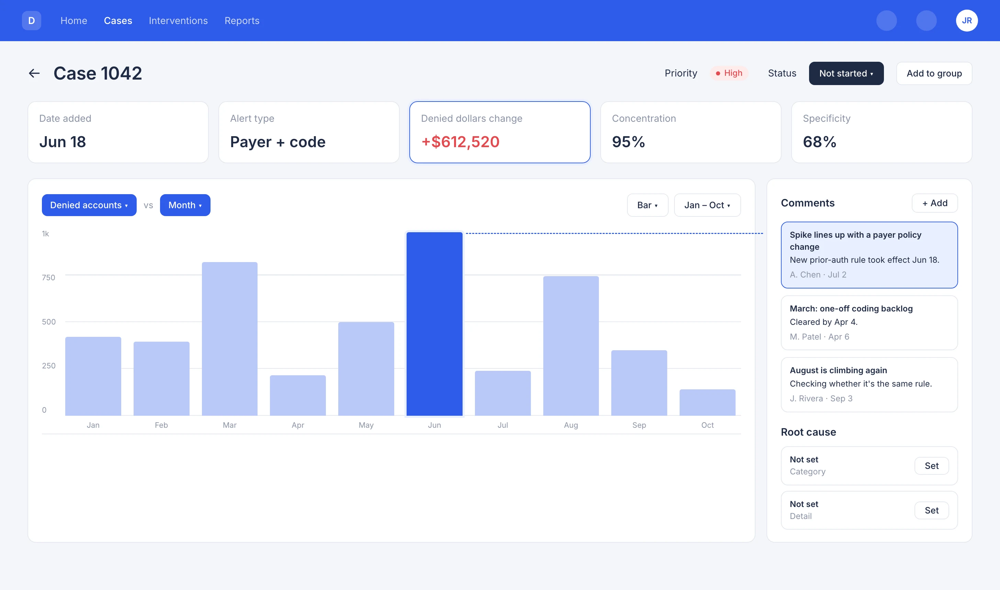
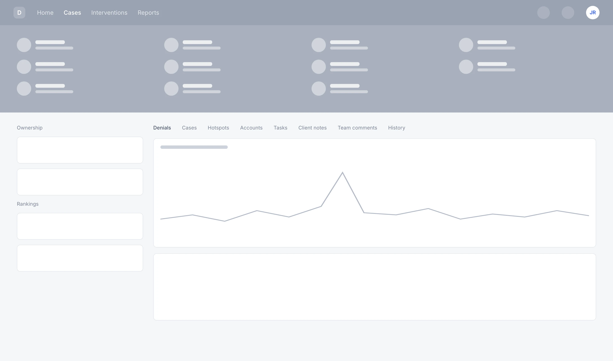
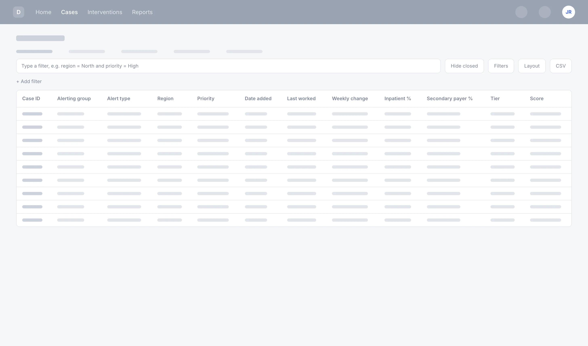
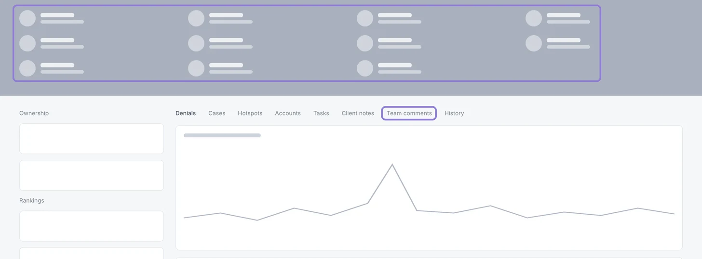
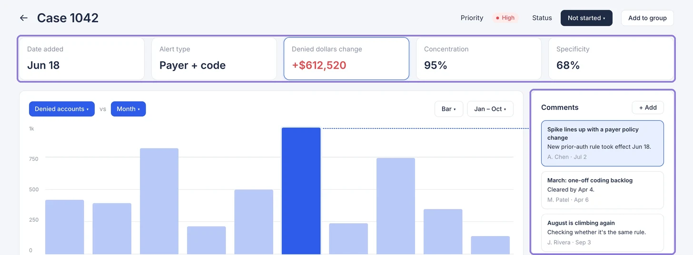
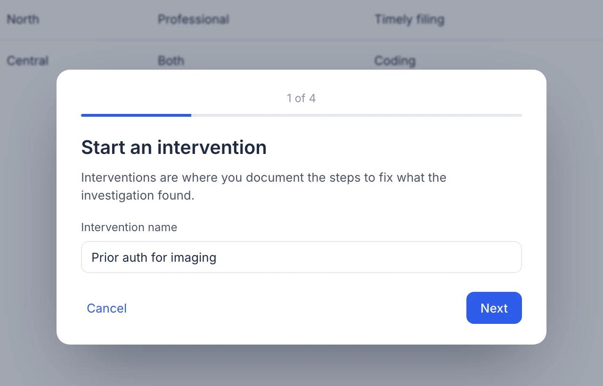
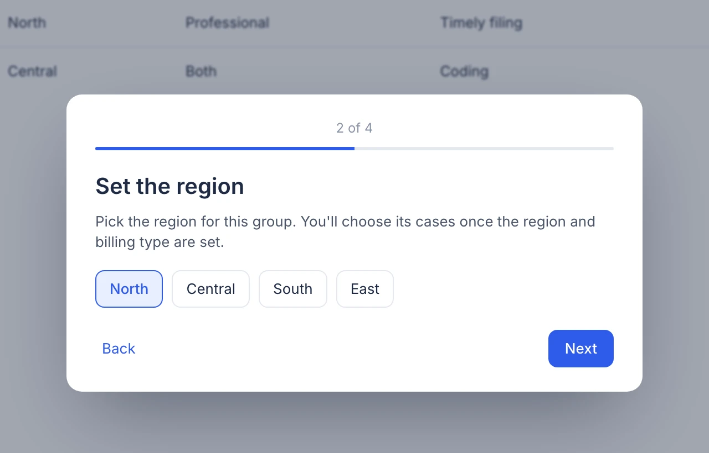
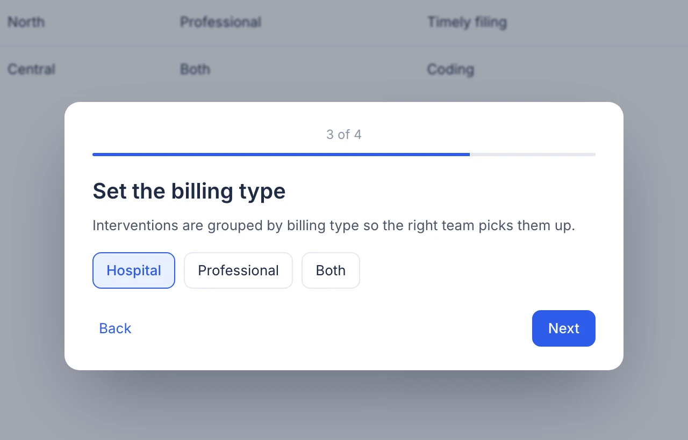
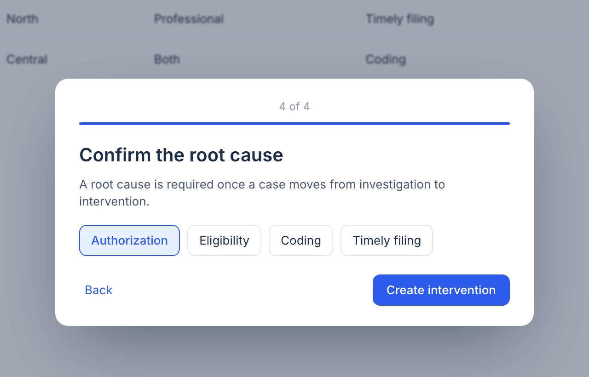
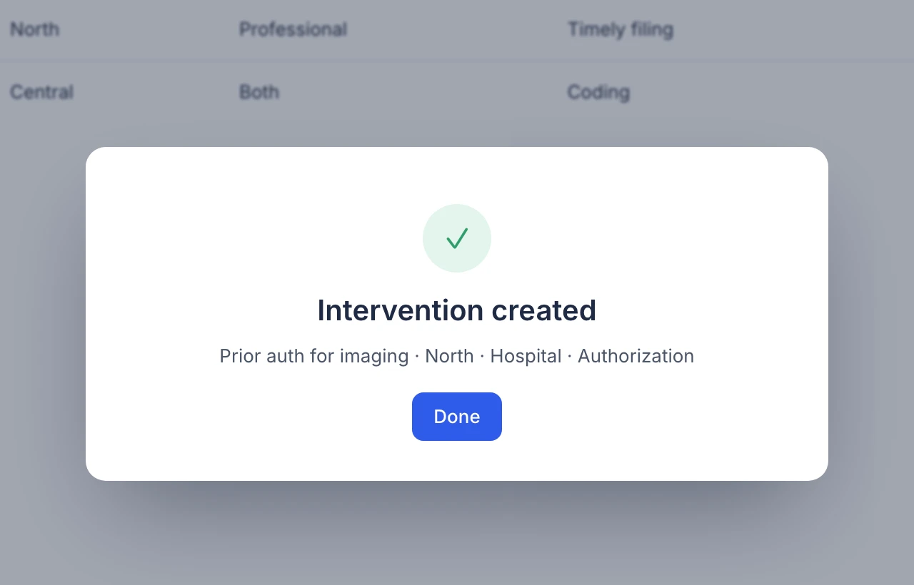

Redesigning a denials platform so revenue cycle teams go from alert to fix faster
Overview
Hospitals lose money every time an insurer denies a claim…
Our client's platform helps hospital revenue cycle teams track denied claims, find the root cause, and stop the same denials from coming back. It groups denials into cases. Teams investigate each case, then open an intervention to fix the cause.
The client's own users called the interface clunky, and they were planning a new version. For our University of Michigan mastery course, our team spent a semester redesigning it with them.
The case page, before and after


…but finding out why took too many clicks, filters typed by hand, and a trip to Excel.
We rebuilt the four screens on the path from an alert to a fix: the dashboard, the cases list, the case page and starting an intervention. The thread through all of them was the same. Show the dollar impact first, keep the next step on the screen you're on, and let people filter like they do in a spreadsheet.
We rebuilt the dashboard, cases list, case page and intervention flow around one idea: show the dollar impact first, and keep the next step on the screen you're on.
Who uses it
People whose job is to get denied claims paid, and to stop them happening again.
Denial specialists
Work the cases: investigate a spike, find the root cause, open an intervention.
A/R follow-up and billing teams
Pick up interventions for their region and billing type, and close them out.
Revenue cycle leaders
Need to see trends, team progress and the dollars at stake, without digging.
The client's success team
Walk customers through the platform and pass on what they hear.
Research
We asked how people handle denials today, before looking at the screens.
Our professor pushed us to step back from the demo environment. A usability test shows where people get stuck, but not what they're trying to find out, so we needed users to tell us the story of their last denial.
We ran five sessions with the client's stakeholders and users, two of them usability tests of the current product. I scheduled the client sessions. We then mapped every interaction, ran a heuristic evaluation, sorted the findings in an affinity map, and did a cognitive walkthrough with the client's product owner, from an alert to a resolved denial.
5
sessions with stakeholders and users
2
usability tests of the current product
1
cognitive walkthrough, alert to resolution
What the tests looked at
Spotting trends
How people find and investigate a denial spike in the charts.
Filtering cases
How they filter and organize cases in the tables.
Key workflows
How easily they finish the core denial-management tasks.
Grouping
How they group and review related cases.
The problem
The data was there. Getting to it was the work.
“It's a lot of clicking.”
Client user
“Typing filters manually is tedious.”
Client user
“I'd need Excel to really understand this.”
Client user
“It almost feels like I'm documenting things twice.”
Client user
Our heuristic evaluation put the same issues on the screens. These wireframes show the old layouts, redrawn without the client's interface.

- Filters were typed by hand, as text.
- Twelve columns, with the dollar change far to the right.
- To rank by dollar impact, people exported to CSV and sorted in Excel.
- Every number at the same size. The dollar impact didn't stand out.
- Eight tabs. Comments and notes sat on different tabs from the chart.
- A spike in the chart, with nothing next to it explaining why.
The insightPeople weren't missing data. They were missing a short path from “what spiked?” to “who's fixing it?”
Principles
Four rules for every screen.
Dollars first
Lead with the dollar impact, so the costliest denials get worked first.
Filter like a spreadsheet
Filter and sort from the column, instead of typing filters.
Next step on the same screen
Fewer clicks between spotting a problem and acting on it.
Same cues everywhere
One layout and one set of controls across cases, interventions and reports.
The redesign
Every complaint got an answer on the screen.
Pick a quote to see the part of the redesign that answers it. All screens are recreations of our designs with made-up data.

Dashboard
Goal: fewer steps, clearer insights, faster decisions.
The old home stacked numbers, lists and charts in one long column. Hover the markers to see what each part of the new one does.
- Totals and the high-priority list share a card, so the most urgent case is one click from home.
- My tasks keeps each person's follow-ups on the home screen.
- Hover a bar for its priority and regular counts, instead of reading them off the axis.
- Status reads as one stacked bar with counts, so the backlog shows at a glance.
Cases
Goal: find and filter key cases quickly.
Filter by any column, sort from any header, and choose which columns to show. The clip below plays on its own; click into it to try it.
Click in to try it
Case page
Goal: see the spike and the reason together.
The header went from a row of equal numbers to five score cards, with the dollar change outlined. Comments moved out of their tab and next to the chart: each one links to the month it explains, and the root cause sits right under them. Drag the slider at the top of the page to compare.
Before → after11 numbers → 5 score cards. 8 tabs → 1 page.


Interventions
Goal: reduce repetition and guide people through it.
“Documenting things twice” came from the hand-off between a case and its intervention. Starting one is now four short steps with a progress bar, each saying what it's for. Carrying the case's notes forward is our top recommendation for the next version.





Try it yourself
From alert to fix, in four screens.
Spot it: hover the bars to see priority and regular cases for each day.
Impact & reflection
A shorter path from “what spiked?” to “who's fixing it?”
We handed the client a clickable prototype, marked-up designs with the reasons behind each change, and a final report. For users, the redesign means fewer clicks and a clear next step. For the client and its customers, it means more accurate prioritization and faster work on high-dollar denials.
4
Workflows redesigned: dashboard, cases, case page and intervention
4
Usability tests: two on the old product, two on our first designs
18 mo
Implementation plan handed to the client
Start with the story, not the screen
Asking about the last denial someone worked told us more than watching them click.
What's next
Measure time to find a high-priority case, time to filter and start an intervention, and how often analysts still export to Excel.